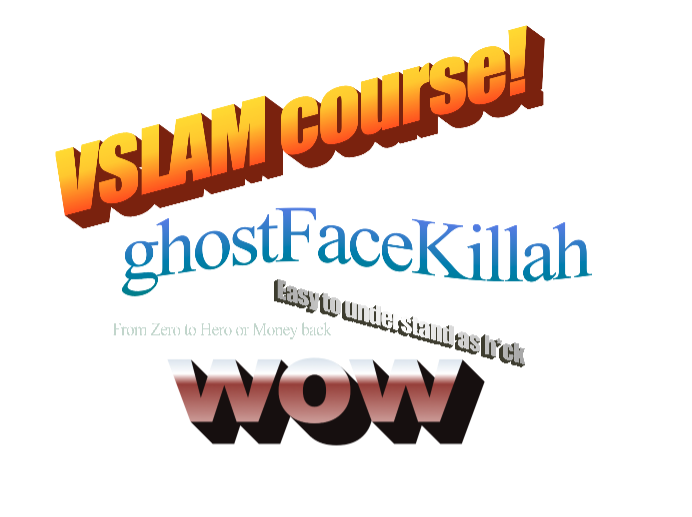

VSLAM course - Part 0x0 - Intro
Agenda of this lecture:
- What is this course?
- References
- What's VSLAM?
- Draft of the system
What is this course?
- Have fun!
- Tries to maximize accessibility in some sense:
- One simple approach from many possible, but complete.
- No black boxes (see all the way through abstraction).
- To hit this goal, we take opinionated choices.
- readability > performance - in real life, you need opposite.
- simulated data
- Don't just read it,
fight it!
Opening references
The course is roughly based on this book:
Our python code that we will in this course is here:
What's VSLAM?
SLAM - simultaneous visualization and mapping based on vision.
given cameras (usually one or two, but could be more) and IMU (accelometer)
we want to figure out:
- Where are we?
- How does the environment around us look like?
- "Where are the walls and how far are we from them"?
SLAM vs VSLAM: the biggest practical difference is that SLAM uses 2D or 3D LiDaR
LiDaR (which are laser distance meters)
gives us ~20 scans per second in 2d or 3d
Some say "Lidar is an expensive crutch. Humans can navigate from vision perfectly well"
- This is only partially true.
- The sitation is dynamic.
- Lidars are becoming exponentially cheaper.
- Cameras have their own complexities and blindspots.
- Cameras can be hard to integrate and surprisingly expensive if you are going for quality.
How does the system work?
- The robot has two cameras.
- The robot goes through the environment in timesteps
- At each timestep we get a picture from the left eye and right eye.
- We could do one of 2 things at the given timestep:
- Establish "keyframe" reference location. We will relate our later location in
the world comparing to this location.
- Compute our pose in relation to this previously saved keyframe
First, by comparing image from two eyes we could estimate depth of things we see.
- we match up points from left image to points in the right image.
- we know how far apart are the eyes of the robot,
and based on this we could figure out how far away from us are the things.
- We remember depth information and call this reference
3d-from-two-eyes picture the "keyframe".
Then, as the robot moves on, we compare the new information
to the reference keyframe.
- We try to figure out which points in the new image are the same elements
that we have seen before. Based on their movement, we figure out how much we
have moved.
- As it gets away from the keyframe, the shared elements between
the keyframes current left eye image and past left eye image might get more
rare. We have moved on so we see other stuff. So we need to make a new keyframe
every now and then
Plan of the lecture:
- Expressing poses of robot as SO(3) and SE(3).
- coordinate systems & coordinate transormations
- if this object is at position xyz when measured wrt to left eye, where is it wrt to right eye?
- Pinhole camera system / equations
- if object is at such and such position wrt the robot, where is it in the picture?
- Feature matching
- Depth estimation
- Gauss Newton optimization & PNP (Point n Perspective)
- If we know which correspondence of objects in the current frame
and keyframe, how do we compute current pose wrt to keyframe?
- putting it together - the actual VSLAM
More specialized refrences
- Steepest possible learning curve:
- To get stuff done in non-deep-learning way in real life,
there's a widely-used and practicioner-recommended book and C++ library.
-
Factor Graphs for Robot Perception
- principled and mathematically grounded introduction into factor-based SLAM backend.
We are very grateful to the authors for free pdf. Thank you!
-
The library GTSAM
same authors (+ open source community, lab members and grad students)
-
There's a bunch of classic books:
- Gentle, cute and classic introduction to mapping as Bayesian filtering:
Probabilistic robotics.
- For SE(3), SO(3) there's 2 classic textbooks: